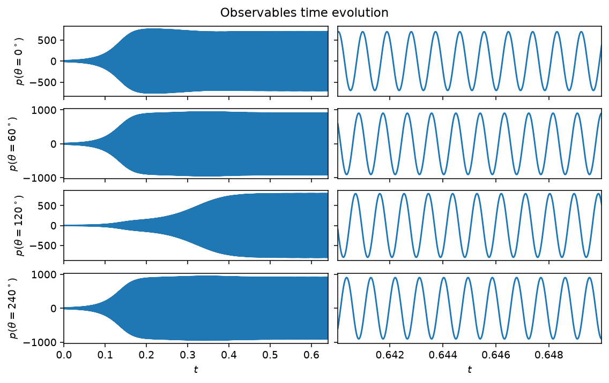
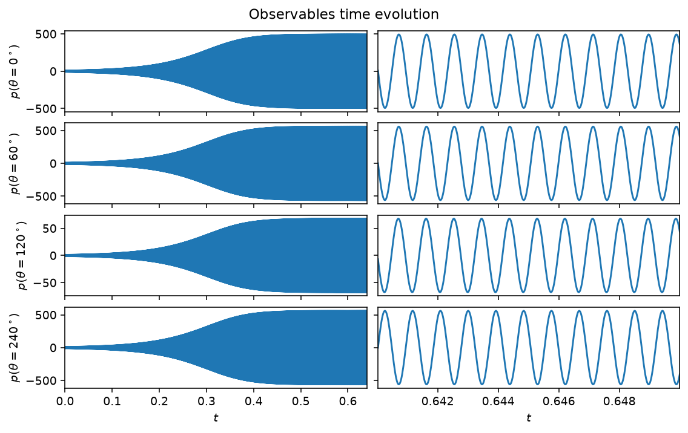
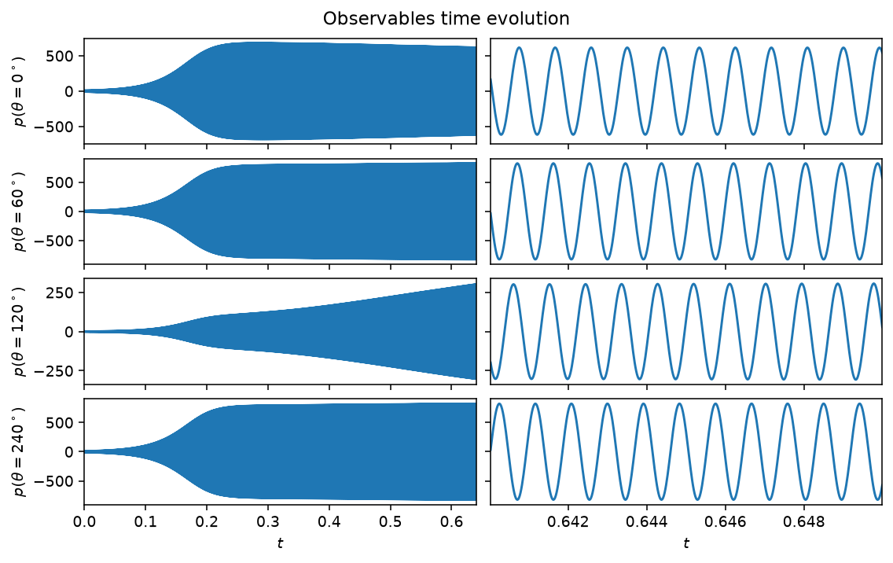
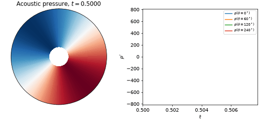
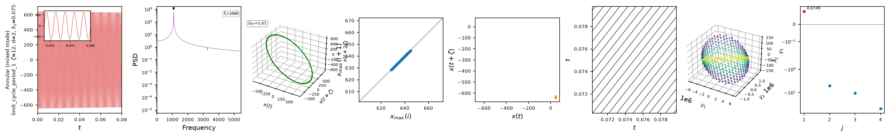

Annular combustor
The annular combustor model extends the single-mode picture of the Van der Pol and Rijke models to the first azimuthal mode pair of an annular geometry, such as a gas-turbine combustion chamber. Decomposing the acoustic pressure as \(p(\theta,t) = \eta_a(t)\cos(\theta) + \eta_b(t)\sin(\theta)\) gives four coupled first-order ODEs for \((\eta_a, \dot{\eta}_a, \eta_b, \dot{\eta}_b)\), with a growth rate \(\nu\), a resistive asymmetry \(c_2\beta\), a saturation \(\kappa\), and a reactive asymmetry \((\epsilon, \Theta_\epsilon)\) that breaks the rotational symmetry of an idealized annulus. The full equations are in the API reference below.
The balance between \(\nu\) and \(c_2\beta\) sets the qualitative regime. Three
named cases are pre-tabulated in CASES and selected with case='...'
(explicit keyword arguments override a case's values); the class defaults
(ER=0.5) give \(\nu<0\), a linearly stable mode that decays to the origin
rather than self-oscillating, so pick a case (or set nu/c2beta
explicitly) for a self-sustained oscillation.
Quickstart
from dynamodels.physical import Annular
model = Annular(case='mixed', dt=1./51200)
psi, t = model.time_integrate(Nt=30000)
model.update_history(psi, t)
model.visualize_observable_hist()
model.close()
Annular.nu_from_ER(ER) and Annular.c2beta_from_ER(ER) map an equivalence
ratio to \((\nu, c_2\beta)\) along the calibrated experimental trend, in case
neither a case nor explicit values fit.
Regimes

case='spinning', \((\nu, c_2\beta) = (30, 5)\): growing onto a self-sustained
oscillation. With \(c_2\beta\) small relative to \(\nu\), the pattern rotates
around the annulus rather than sitting still, so the four microphones' final
amplitudes are closer to each other than in the standing case below (the
small residual spread comes from the model's built-in reactive asymmetry,
\(\epsilon\)).

case='standing', \((\nu, c_2\beta) = (0, 50)\): a fixed node-antinode
pattern rather than a rotating one. The \(\theta=120^\circ\) microphone sits
almost exactly on a node, with roughly an order of magnitude smaller
amplitude than the other three.

case='mixed', \((\nu, c_2\beta) = (20, 18)\), past the transient. Left: the
full run. Right: a few periods of the established oscillation. The
\(\theta=120^\circ\) microphone sits closer to a pressure node of this mode
and saturates more slowly.
A microphone trace alone does not show where the pressure pattern sits around the annulus, nor whether it rotates. An animation does:

case='mixed', past the transient. Left: the acoustic pressure
\(p(\theta,t) = \eta_a\cos\theta + \eta_b\sin\theta\) around the annulus, with
\(\theta=0^\circ\) at the top. Right: the same field sampled at the four
microphones. The pattern neither stands still nor rotates steadily: it is the
mixed state between the two limits above. The
annular combustor tutorial builds this figure step by step.
Nonlinear diagnostics

Diagnostics from ntsa.characterize on the mixed mode,
left to right: the observable time series with a zoomed inset; power
spectral density; the 3-D delay-embedded portrait; the first-return map of
the maxima; a plane-crossing Poincare section; a recurrence plot; a 3-D
classical-MDS embedding of the full state; and the leading Lyapunov exponent.
Reference
Novoa, A., Noiray, N., Dawson, J. R., & Magri, L. (2024). A real-time digital twin of azimuthal thermoacoustic instabilities. Journal of Fluid Mechanics, 1001, A49. doi:10.1017/jfm.2024.1052
API
dynamodels.physical.annular.Annular
Bases: Model
Annular combustor — two coupled oscillators for the first azimuthal modes.
The acoustic pressure in the annulus obeys the wave equation with heat-release source and resistive/reactive asymmetries,
Decomposing the pressure field onto the first azimuthal mode pair (\(n = 1\)),
yields four coupled first-order ODEs for \((\eta_a, \dot{\eta}_a, \eta_b, \dot{\eta}_b)\):
The estimable parameters are the growth rate \(\nu\), the resistive-asymmetry intensity \(c_2\beta\), the saturation \(\kappa\), the reactive-asymmetry amplitude \(\epsilon\) and phase \(\Theta_\epsilon\), the frequency \(\omega\) and the direction of maximum r.m.s. pressure \(\Theta_\beta\).
Three named regimes are pre-tabulated in CASES and selected with
case='...' (explicit keyword arguments override a case's values):
'spinning': purely spinning mode, \((\nu, c_2\beta) = (30, 5)\);'standing': purely standing mode, \((\nu, c_2\beta) = (0, 50)\);'mixed': mixed mode, \((\nu, c_2\beta) = (20, 18)\).
The class defaults (ER=0.5) give \(\nu<0\), a linearly stable mode that
decays to the origin rather than self-oscillating; use a case or set
nu/c2beta explicitly for a self-sustained oscillation.
References
Nóvoa, Noiray, Dawson & Magri (2024). A real-time digital twin of azimuthal thermoacoustic instabilities. J. Fluid Mech., 1001, A49. DOI: 10.1017/jfm.2024.1052.
Source code in dynamodels/physical/annular.py
17 18 19 20 21 22 23 24 25 26 27 28 29 30 31 32 33 34 35 36 37 38 39 40 41 42 43 44 45 46 47 48 49 50 51 52 53 54 55 56 57 58 59 60 61 62 63 64 65 66 67 68 69 70 71 72 73 74 75 76 77 78 79 80 81 82 83 84 85 86 87 88 89 90 91 92 93 94 95 96 97 98 99 100 101 102 103 104 105 106 107 108 109 110 111 112 113 114 115 116 117 118 119 120 121 122 123 124 125 126 127 128 129 130 131 132 133 134 135 136 137 138 139 140 141 142 143 144 145 146 147 148 149 150 151 152 153 154 155 156 157 158 159 160 161 162 163 164 165 166 167 168 169 170 171 172 173 174 175 176 177 178 179 180 181 182 183 184 185 186 187 188 189 190 191 192 193 194 195 196 197 198 199 200 201 202 203 | |
get_observables(Nt=1, loc=None, measure_modes=False, **kwargs)
pressure measurements at theta = [0º, 60º, 120º, 240º]
Source code in dynamodels/physical/annular.py
164 165 166 167 168 169 170 171 172 173 174 175 176 177 178 179 180 181 182 183 | |
time_derivative(t, psi, nu, kappa, c2beta, theta_b, omega, epsilon, theta_e)
staticmethod
Time derivative of the two coupled azimuthal oscillators (see class docstring).
Source code in dynamodels/physical/annular.py
185 186 187 188 189 190 191 192 193 194 195 196 197 198 199 200 201 202 203 | |